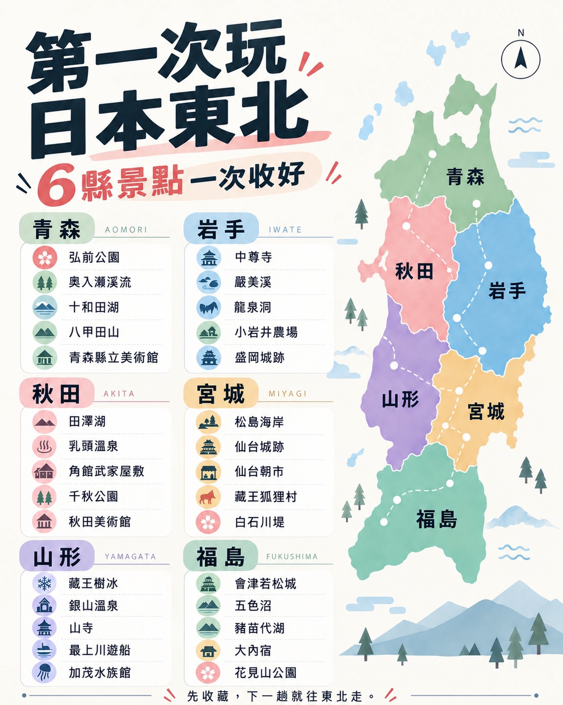
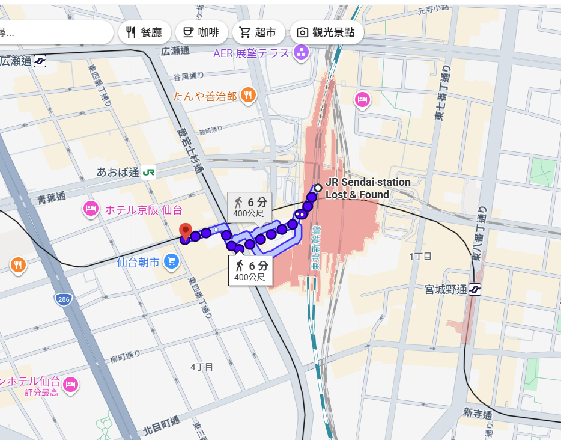
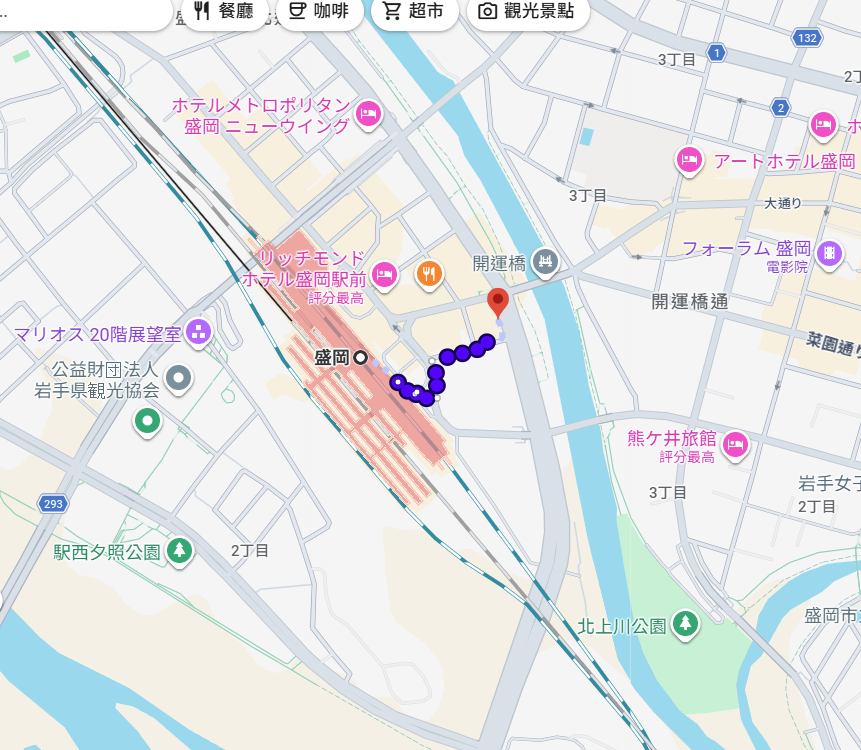

日本東北秋季慢遊
歡迎來到我們的家庭旅行計畫！這次我們將放慢腳步，避開擁擠的人潮，深入日本東北地區。
欣賞壯麗的秋楓、體驗在地文化，以自然風景為優先，共創屬於我們家最溫馨的回憶。

日本東北地理位置與景點總覽
行前準備與資訊
每日行程表
💡 貼心提醒：本次旅行以自然風景為主，每日最多安排三個景點，保持悠閒節奏。
點擊帶有底線的景點名稱，可直接查看該景點詳細介紹喔！
D1 | 10/29(四) 出發與上野採買
住宿：東京上野09:00 - 12:50 從台北松山機場 (TSA) 直飛東京羽田機場 (HND) 【中華航空 CI220】。
下午： 從羽田機場搭乘大眾交通工具前往上野。
14:40 - 15:00 抵達 ホテルリソル上野 辦理入住。
15:00 - 16:00 處理 JR EAST PASS 兌換及主要新幹線指定席預約。
16:00 - 17:30 於上野阿美橫町/御徒町進行藥妝採買 (詳見購物篇)。
17:30 - 18:30 晚餐 (依現場狀況選擇)。
D2 | 10/30(五) 尋訪日本三景
住宿：仙台08:43 - 10:15 搭乘新幹線「はやぶさ7」從上野前往仙台，抵達後先至飯店寄放大型行李。
10:30 - 11:08 搭乘 JR 仙石線從仙台前往 松島海岸。
12:00 - 12:50 乘坐松島灣遊覽船 (建議預約)。
12:50 - 13:50 於松島周邊享用午餐。
14:00 - 15:00 參觀國寶瑞巖寺。
15:00 - 16:00 返回仙台，傍晚於仙台車站周邊購物 (PLST/Uniqlo) 與晚餐。
D3 | 10/31(六) 登高望遠山寺行
住宿：盛岡08:20 - 09:30 逛仙台朝市，推薦品嚐齋藤惣菜店可樂餅與毛豆團子。
09:40 - 10:15 退房，悠閒前往仙台車站。
10:15 - 11:21 搭乘 JR 仙山線從仙台前往 山寺 (立石寺)。
11:25 - 15:20 漫步登頂山寺，欣賞秋季絕景。期間約 12:20-13:10 享用山形蕎麥/山菜料理午餐。
15:28 - 16:25 搭乘 JR 仙山線從山寺返回北仙台。
16:32 - 17:19 轉乘至仙台站，前往新幹線月台。
17:19 - 17:58 搭乘新幹線「はやぶさ45」從仙台抵達盛岡，入住飯店。
D4 | 11/1(日) 悠遊盛岡與絕美溪谷
住宿：盛岡08:00 - 09:20 盛岡市區悠閒散步 (盛岡城跡公園、中津川周邊)。大行李留於飯店。
09:20 - 09:50 回飯店準備前往盛岡站。
10:08 - 10:47 搭乘東北新幹線從盛岡抵達一之關。
11:00 - 11:48 轉搭特色列車「Pokémon with You Train」從一之關前往 猊鼻溪。
11:48 - 12:40 猊鼻溪周邊享用簡單午餐及候船。
13:00 - 14:30 體驗猊鼻溪舟下り (乘船遊溪)。
15:08 - 15:40 搭乘 JR 大船渡線從猊鼻溪返回一之關。
16:00 - 轉乘新幹線由一之關返回盛岡，晚上休息與晚餐。
D5 | 11/2(一) 奧入瀨溪流精華健行
住宿：盛岡上午： 輕裝出發 (大行李留飯店)，搭乘新幹線從盛岡抵達八戶。
10:00 - 11:44 於八戶站西口搭乘 JR 巴士「おいらせ21號」(務必預約)，於「石ヶ戶」下車，開始 奧入瀨溪流 行程。
11:44 - 13:15 健行首段：石ヶ戶 → 雲井の滝 (約 2.6 km，時間充裕可盡情拍照)。
13:15 - 13:24 搭乘接駁公車「みずうみ82號」至「銚子大滝」。
13:24 - 14:28 健行末段：銚子大滝 → 子ノ口 (約 1.6 km)。
14:28 - 14:43 搭乘接駁公車「みずうみ6號」抵達終點「十和田湖(休屋)」。
14:43 - 16:00 於休屋商圈享用午餐/下午茶，漫步至十和田神社或乙女像。
16:00 - 18:20 於休屋搭乘 JR 巴士返程，抵達八戶站西口。
18:56 - 19:28 搭乘新幹線「はやぶさ64」從八戶返回盛岡。
D6 | 11/3(二) 滿載而歸
賦歸07:37 - 09:47 帶著行李退房，搭乘新幹線「はやぶさ6」從盛岡前往東京。
10:03 - 11:27 轉乘成田特快 N'EX 從東京抵達成田機場。
14:35 - 辦理報到，搭乘中華航空 CI101 從成田機場 (NRT) 返回溫暖的家 (桃園機場)。
景點介紹
松島海岸 (日本三景)

松島與京都的天橋立、廣島的宮島並列為「日本三景」。散布在松島灣上的260多個大小島嶼，長滿了黑松與紅松，構成絕美的海景畫卷。來到這裡，最推薦的方式就是搭乘遊覽船，穿梭於島嶼之間，感受海風與大自然的鬼斧神工。
除了自然景觀，這裡還有與伊達政宗淵源深厚的國寶「瑞巖寺」，莊嚴的建築與寧靜的參道，是非常值得一訪的人文歷史景點。
寶珠山 立石寺 (山寺)


建於西元860年的立石寺，通稱「山寺」。最著名的特色是需要攀登約1,015階的石階才能抵達山頂。雖然聽起來有些挑戰，但在涼爽的秋季，沿途被紅葉與黃葉包圍，邊走邊欣賞奇岩怪石與歷史古蹟，腳步也會變得輕盈。
日本俳句大師松尾芭蕉曾在此吟詠名句：「天籟寂靜，蟬聲沁入岩石中」。抵達頂部的「五大堂」宛如懸浮於懸崖上，從那裡俯瞰山谷間的秋色與聚落，絕對會讓您覺得不虛此行。
猊鼻溪 (乘船遊溪)


猊鼻溪是日本百景之一，這裡擁有高達百公尺的石灰岩峭壁，綿延約兩公里。與一般步行觀光的峽谷不同，遊覽猊鼻溪最好的方式是「舟下り」（乘木舟順流而下）。
船夫會用一根長篙撐船，在寧靜的溪谷中緩緩前行，秋季時兩旁的紅葉倒映在水面上，宛如仙境。航程中您還可以購買飼料餵食跟隨小船的魚和鴨子，到了折返點，更能體驗將「運玉」（刻有文字的幸運石）投入岩壁洞口祈福的樂趣，非常適合家庭同樂。
奧入瀨溪流


被譽為「日本最美溪谷」的奧入瀨溪流，是十和田湖流出的唯一河川。從十和田湖的子ノ口到燒山，綿延約14公里。這裡擁有茂密的原始森林、千變萬化的水流，以及無數個大小瀑布（如銚子大滝、雲井の滝）。
本次行程為您精心挑選了「精華段健行搭配公車」的輕鬆走法。步道平緩好走，幾乎沒有高低起伏，讓全家人都能在芬多精與潺潺流水聲中，愜意地欣賞被染成金黃與橘紅的秋季夢幻景致。
旅遊地圖路線

行程動線一覽：從東京出發，一路向北探索宮城、岩手至青森的絕美秋景。
住宿飯店指南
本次旅行挑選的飯店皆以「車站步行10分鐘內、交通便利」為首要條件，方便寄放行李與移動。
D1 東京上野 | ホテルリソル上野 (Hotel Resol Ueno)
📍 位置：距離 JR 上野站入谷口步行約 1 分鐘，全館禁菸，周邊採買極為方便。

D2 仙台 | ダイワロイネットホテル仙台 (Daiwa Roynet Hotel Sendai)
📍 位置：距離 JR 仙台站東口步行約 2 分鐘，車站共構及周邊商場林立，吃早餐與購物都順路。

D3-D5 盛岡 | ダイワロイネットホテル盛岡駅前 (Daiwa Roynet Hotel Morioka Ekimae)
📍 位置：距離 JR 盛岡站極近，過馬路即達。連住三晚免搬行李，作為前往各景點的完美據點。

購物血拚指南
■ Uniqlo 必逛分店
📍 仙台車站周邊 (D2傍晚推薦)
- ヨドバシ仙台店 (Yodobashi)： 位於 JR 仙台站東口，出站透過空橋步行約 1 分鐘即可抵達 Yodobashi 大樓 5 樓。
- 仙台アエル (AER) 店： 位於 JR 仙台站西口，步行約 2 分鐘的 AER 大樓 3 樓。
📍 上野車站周邊 (D1下午推薦)
- 御徒町店 (吉池本店大樓)： 從上野車站步行或搭山手線 1 站即達。這是一間超大型店鋪 (1-4樓皆是)，款式尺寸最齊全！
- エキュート上野 (ecute) 店： 位於 JR 上野站 3 樓 (入谷口剪票口內)，適合回飯店前快速補貨。
📍 東京車站周邊
- グランスタ東京店： 位於 JR 東京車站站內 (地下 1 樓，丸之內改札內區域)。
■ PLST 氣質服飾
PLST 是 Uniqlo 旗下較具都會質感的品牌，版型非常適合亞洲人，強烈建議安排時間去逛逛喔！
📍 PLST 仙台 PARCO 店 (推薦 D2 傍晚)
位於仙台站旁的 PARCO 本館 2 樓。從仙台車站西口出來走天橋即可直達，非常適合在仙台的晚上安排採買。
📍 大丸東京店
位置：JR 東京車站八重洲北口改札口旁。若在上野覺得時間充裕，也可搭乘 JR 山手線 (約5-7分鐘) 直接到東京站逛大丸百貨的分店。
💊 藥妝店採買策略
主力戰場：D1 上野阿美橫町 (アメ横)
強烈建議將大量的藥妝採買集中在第一天下午的阿美橫町，買完直接拿回上野飯店，後面幾天才不會提得大包小包。
- OS Drug (オーエスドラッグ)： 雖然不能免稅也不能刷卡，但現金價通常是全街最便宜！適合買常備藥品。
- 大國藥妝 (ダイコクドラッグ)： 價格親民，有會說中文的店員，零食和藥妝種類豐富。
- 松本清 (マツモトキヨシ)： 品項最齊全，特別是專櫃保養品與化妝品。
補貨備案：仙台與盛岡車站
- 仙台車站： 車站大樓 S-PAL 內及西口周邊有非常多松本清與 Sun Drug (サンドラッグ)，若 D1 有漏買的可以補齊。
- 盛岡車站： 站內的 FESAN (フェザン) 百貨一樓也有大型松本清，住在盛岡的晚上隨時可以下樓逛。
元氣美食與在地特色
☕ 喚醒早晨的美味
由於我們訂的方案皆不含早餐，以下為您整理各飯店車站周邊、早上8點前即營業的優質早午餐口袋名單，也可外帶上新幹線享用。
仙台車站周邊
🍚 Date Cafe O'rder (日式在地早餐)
位置：JR仙台站 2F 中央剪票口附近 | 營業時間：07:15 起
交通極為方便。使用宮城縣產「一見鍾情」好米製作的手作飯糰、茶泡飯以及東北鄉土料理芋煮湯。早上想吃熱騰騰的日式朝食或趕時間外帶，這裡是首選！
🥐 HUMMING MEAL MARKET COFFEE & BAR
位置：S-PAL仙台 東館 2F | 營業時間：07:30 左右
位於東口剪票口附近，有大片落地窗採光極佳。提供現烤麵包、三明治與香濃咖啡，環境悠閒，想吃西式輕食的好去處。
🍳 杜之咖啡館 Cherish Coffee (チェリッシュ珈琲)
位置：仙台站步行約3分鐘 | 營業時間：08:00 起
主打嚴選日本產食材的日西式早餐與窗景咖啡座，環境安靜舒適，很適合悠閒地開啟早晨行程。
上野車站周邊
🐼 Andersen アトレ上野店
位置：JR 上野站內 (アトレ上野 1F)
提供豐富的現烤麵包，還有超級可愛的「上野限定貓熊造型麵包」，小朋友一定會喜歡！
🍞 ザ スタンダート ベイカーズ (The Standard Bakers)
位置：JR 上野站 3 樓改札內 (ecute 商場)
使用北海道小麥製作的精緻克拉夫特麵包，就在站內，買了直接上車非常方便。
🥢 東北特色美食 (安心指南)
⚠️ 飲食特別叮嚀：
我們家不吃牛、不吃馬肉，也不吃生食(生魚片等)。因此，請特別注意：到仙台時避開「牛舌 (牛タン)」料理；盛岡有名的「冷麵」湯頭經常使用牛骨熬製，建議點餐前確認或選擇替代方案。
盛岡炸醬麵 (盛岡じゃじゃ麺)
盛岡三大麵之一！這是一種溫熱的拌麵，主要配料是特製的肉味噌（通常為豬肉）、小黃瓜與蔥，完全沒有生食與牛肉的疑慮。吃完麵後，打一顆生雞蛋在碗裡，請店員加入熱湯（ちーたんたん），美味又暖胃！
毛豆泥甜點 (ずんだ)
仙台的靈魂甜點！將毛豆搗碎加入糖做成翠綠色的甜泥。您可以在仙台車站或街邊找到「毛豆泥麻糬 (ずんだ餅)」或超級好喝的「毛豆泥奶昔 (ずんだシェイク)」，香甜可口，是百分之百安全的素食甜點。
岩手碗子蕎麥麵 (わんこそば)
盛岡三大麵之一，也是一場有趣的家庭挑戰！店員會站在旁邊，每吃完一口份量的蕎麥麵，就立刻幫您加進新的一口，直到您將碗蓋上為止。湯頭主要是鰹魚/昆布醬油，配料多為海苔、芝麻等，好玩又好吃。
米棒鍋 (きりたんぽ鍋)
雖然是秋田名產，但在東北各地的鄉土料理餐廳也能吃到。將搗碎的米飯捏在木串上烤過，再放入以「比內地雞」熬製的醬油雞湯中，搭配蔬菜與菇類燉煮。全部都是熟食，且湯頭溫潤，非常適合秋天的夜晚。